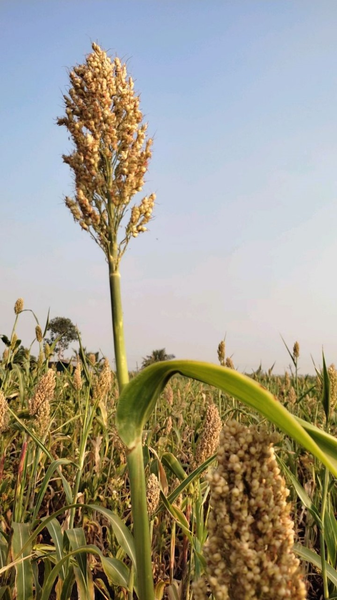

Jowar (Sorghum) Cultivation Guide

1. Land Preparation
Plow the land 2–3 times to a fine tilth.
Remove weeds and level the field for better water conservation.
Apply organic manure or FYM during the last plowing.
2. Seed Selection & Sowing
Choose high-yielding, drought-resistant varieties suitable for the region.
Optimal sowing time: Kharif (June–July) and Rabi (September–October).
Spacing: 45 cm between rows and 15 cm between plants.
Seed rate: 8–10 kg/acre; treat seeds with fungicide before sowing.
3. Water Management
Jowar is drought-tolerant; irrigation needed only at critical stages.
Key stages:
Seedling, Flowering, and Grain filling.
Excess water should be drained quickly to prevent root rot.
4. Fertilization Schedule
Basal Dose:
Urea (30 kg), DAP (25 kg), MOP (15–20 kg).
Top Dressing:
Urea (20 kg) at 30–35 days after sowing.
Apply organic compost to improve soil structure and yield.
5. Weed & Pest Management
Weeds:
Manual weeding at 20 and 40 days or use Atrazine.
Pests:
Shoot Fly, Stem Borer — control with recommended insecticides.
Diseases:
Downy Mildew, Rust — use resistant varieties and fungicides.
6. Investment Breakdown (Per Acre)
Input
Estimated Cost (INR)
Seeds
₹600 – ₹1,000
Fertilizers
₹1,500 – ₹2,500
Pesticides/Fungicides
₹800 – ₹1,500
Labor (Plowing, sowing, weeding, harvesting)
₹5,000 – ₹9,000
Irrigation
₹1,000 – ₹2,000
Total Investment
₹10,000 – ₹16,000 per acre
7. Harvesting & Yield
Harvest when grains are hard and moisture content is around 20%.
Expected yield: 15–25 quintals per acre depending on conditions.
8. Market Rate & Profit Estimation
Average market price: ₹2,000 – ₹3,000 per quintal.
Gross returns per acre: ₹30,000 – ₹75,000.
Net profit: ₹15,000 – ₹60,000 per acre.